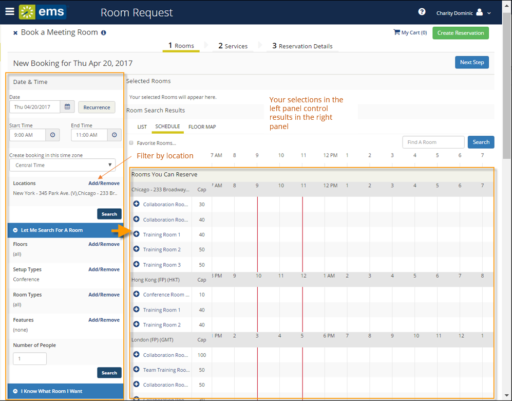

Search for Available Rooms
During the booking process, you can search for available rooms on the Room Request page in two ways: Let Me Search For A Room or I Know What Room I Want.
- From the Create a Reservation screen, in the Bookings area, select one of the following:
- Let Me Search For A Room
- I Know What Room I Want

Tips: Filters in the left panel help you narrow your Room Search Results. When you click Search, results appear on the right. From these results, you can view expanded Room Details by clicking on the room name, and you can view any available floor plans by clicking the floor plan icon next to it.
You can click the Add/Remove buttons next to Locations, Floors, Setup Types, and Features to add or expand your filters. To set Favorite Rooms to use every time, see Set Favorite Rooms.
Locating space as part of the reservation process is different than browsing locations. For detailed instructions on using the BROWSE LOCATIONS option in the main menu to view available and booked space, see Browse Locations.
- To filter your search by Location, click Add/Remove next to Location. This presents a list of locations by Building or view. Select the locations filters you wish to apply (or search by keyword), and then click Update Locations. This filters the results of your keyword search on the Add New Favorite Room dialog (above). Your filter settings are saved, and you will have to go back in and remove them if you wish to expand search results beyond these locations.

- Once you have located a room to reserve, click the Add (+) icon to add it to your reservation. This adds the booking to your cart. You can change your mind and delete or change the room for the booking before you finalize your reservation.